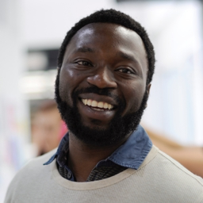

I received a job offer mid-course, and the subjects I learned were current, if not more so, in the company I joined. I honestly feel I got every penny's worth.
" I was an EMT for many years before I joined the bootcamp. I've been looking to make a transition and have heard some people who had an amazing experience here. I signed up for the free intro course and found it incredibly fun! I enrolled shortly thereafter. The next 12 weeks was the best - and most grueling - time of my life. Since completing the course, I've successfully switched careers, working as a Software Engineer at a VR startup. "

The team was very supportive and kept me motivated
" I started as a total newbie with virtually no coding skills. I now work as a mobile engineer for a big company. This was one of the best investments I've made in myself. "
An overall wonderful and rewarding experience
" Thank you for the wonderful experience! I now have a job I really enjoy, and make a good living while doing something I love. "
Awesome teaching support from TAs who did the bootcamp themselves. Getting guidance from them and learning from their experiences was easy.
" The staff seem genuinely concerned about my progress which I find really refreshing. The program gave me the confidence necessary to be able to go out in the world and present myself as a capable junior developer. The standard is above the rest. You will get the personal attention you need from an incredible community of smart and amazing people. "
Such a life-changing experience. Highly recommended!
" Before joining the bootcamp, I've never written a line of code. I needed some structure from professionals who can help me learn programming step by step. I was encouraged to enroll by a former student of theirs who can only say wonderful things about the program. The entire curriculum and staff did not disappoint. They were very hands-on and I never had to wait long for assistance. The agile team project, in particular, was outstanding. It took my learning to the next level in a way that no tutorial could ever have. In fact, I've often referred to it during interviews as an example of my developent experience. It certainly helped me land a job as a full-stack developer after receiving multiple offers. 100% recommend! "